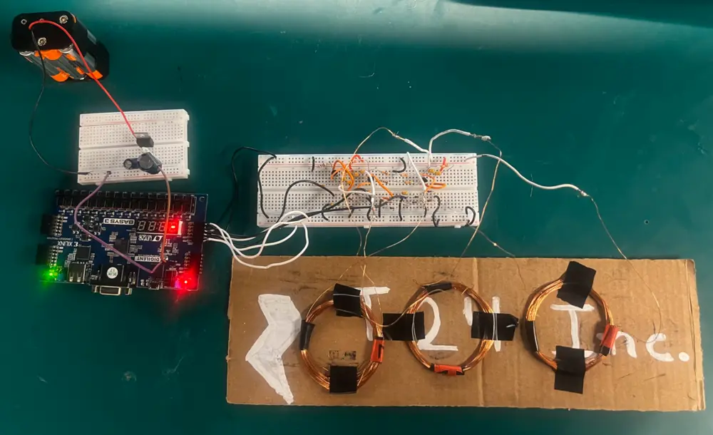

Metal Detection System using Colpitts Oscillator & FPGA
Junior Design Final Project: A three-channel metal detection system with analog front end, Colpitts oscillators, and FPGA-based signal processing.
Expert in electrical engineering with a focus on circuit design, FPGA development, and embedded systems. Passionate about building innovative hardware solutions and optimizing system performance.
Junior Design Final Project: A three-channel metal detection system with analog front end, Colpitts oscillators, and FPGA-based signal processing.

Three-stage AM demodulator with diode envelope detector, RC filter, and OP474 amplification stage. Successfully recovered audio signals from AM modulation.

Senior design project: Developing a ferrofluid display chamber for studying and manipulating microparticles under magnetic and electric fields.
Junior Design Final Project: Create a metal detection system using off-the-shelf parts. Team consists of two Electrical Engineers (Georges and Jonathan Fuentes (myself)) and three Computer Engineers (Onkar, Ian and Giri).
Electrical Engineers: Built a three-channel analog front end with a 5 V regulator, three Colpitts oscillators each paired with an induction coil, and rectifier and filter stages that turned the RF into a steady voltage for the analog-to-digital converters of the FPGA board. The coils create a magnetic field, and nearby metal disturbs it, which shows up as a change in the DC output. The team modeled the circuit in LTSpice, assembled and labeled the hardware, and handed the Basys3 three clean voltages the code could use to judge position and signal strength.
Computer Engineers: Used memory-mapped GPIO and the XADC Wizard IP to implement the Basys3-side acquisition and display stack in Vitis C. In order to establish baseline voltages while animating the LEDs, a startup calibration procedure repeatedly samples VAUX_6/7/15 and averages the results. In order to determine lateral position (Left, Center-left, Center, Center-right, Right), ADC readings are converted to millivolts, normalized to a 0–10 strength scale per coil with tuned thresholds (40 mV left/center, 20 mV right), and compared in the main loop. Only stable detections are allowed to increase the per-region counters thanks to a debouncing scheme with a 100 ms stability window. In order to connect real-time sensing with clear visual feedback, the team also created an LED bar-graph routine and a multiplexed seven-segment driver (direction symbols plus counters).
Team Result: The system correctly detected 15/15 conductive objects in various combinations of position and distance from magnetic coils during the demonstration. View Report

We built a three-stage AM demodulator: a diode envelope detector, a small RC filter around 1.6 kHz, and a non-inverting OP474 stage set to about 3× gain with 100 kΩ/47 kΩ. For testing we used a 2 kHz carrier and a 100 Hz message from the function generator at 1 Vpp with ~80% modulation, then watched the detector and filter cleanly recover the message on the scope before the amp brought it up. We sketched it in LTSpice, wired it on a breadboard, and drove an 8 Ω speaker; the build worked as planned, with the main future tweak being a small nudge to the RC timing for even cleaner audio. View Report


Currently working on my senior design project. My group and I are developing a ferrofluid display! Our project focuses on developing a cutting-edge chamber for studying and manipulating microparticles under magnetic and electric fields. The system will provide a controlled environment for observing and analyzing particle motion. This design will be used by our faculty advisor, Dr. Kaiyan Yu, as a visual aid to her explanations and demonstrations of her research on microfluidic devices.